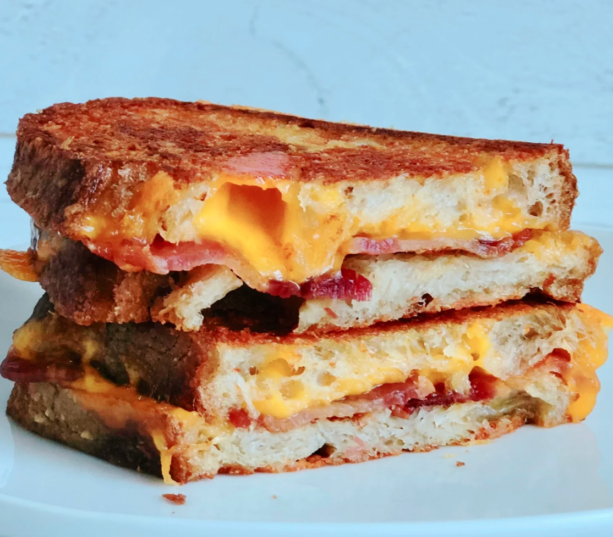

Grilled Cheese of the Gods

Picture provided by allrecipes
Description
This easy gourmet sandwich is so good, you would serve it to the president if you had him over for dinner. As
far as grilled cheese goes, this is it! Serve with a nice gourmet Italian salad.
Ingredients
- ¼ cup butter, softened
- 1 cup freshly grated Parmigiano-Reggiano cheese
- 8 slices cooked bacon
- 4 slices Cheddar cheese
- 8 slices sourdough bread
Preperation
- In a small bowl, mash together the butter and Parmesan cheese until evenly blended. Make sandwiches by
placing two slices of bacon and one slice of Cheddar cheese on half of the bread slices. Top with the
remaining slices of bread.
- Heat a large skillet over medium heat. Spread some of the butter mixture on the top of each sandwich. Place
sandwiches butter side down in the skillet. Spread the remaining butter mixture on the other sides. Cook
until golden brown on each side, about 3 minutes per side. To serve, cut in half diagonally.
- Enjoy and feel the power of the gods course through your veins!
Nutrition Facts
Per servering: 510 calories; protein 26.7g; carbohydrates 29.8g; fat 31.7g; cholesterol 86.2mg;
sodium 1194.4mg.